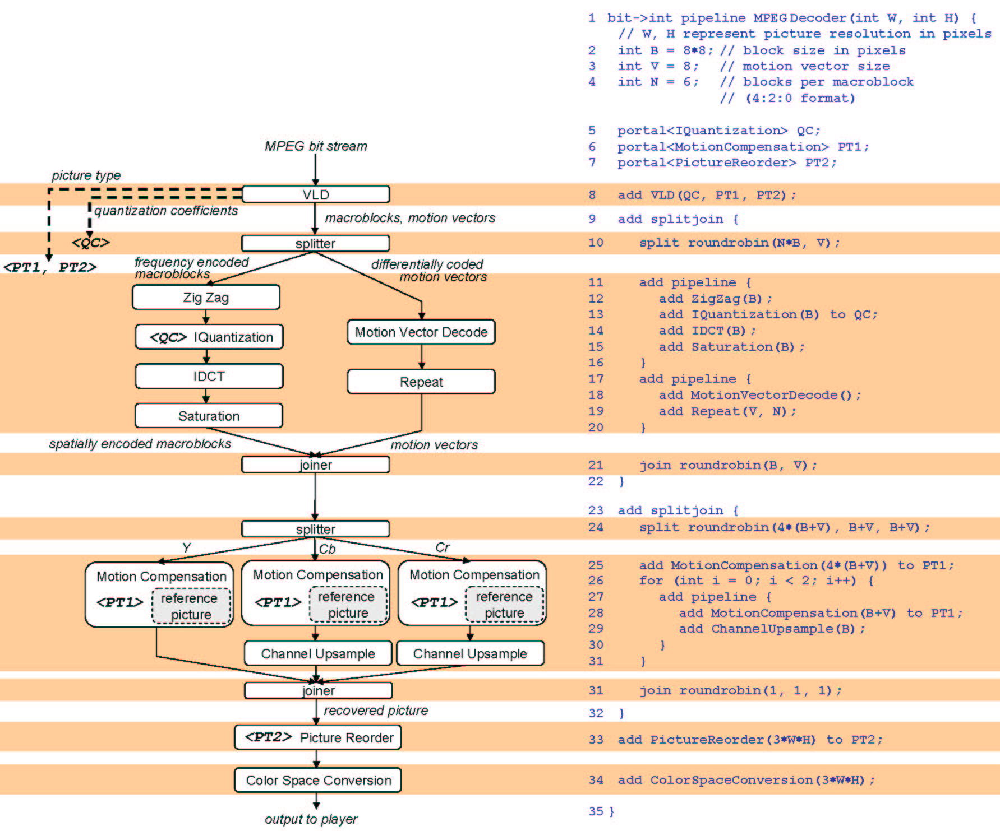

Image and video codecs are prevalent in a wide range of computer systems and multimedia devices. However, it is common practice for developers to create and customize separate encoder and decoder implementations for each of the architectures they target. This practice is time consuming and error prone, leading to code that is neither malleable nor portable.
Multimedia algorithms generally exhibit both strong data locality and high degrees of data and pipeline parallelism. As such, they are well-suited for stream-based languages. Our research has focused on enabling the rapid implementation of high performance multimedia codes in StreamIt, a high level programming language for stream programming [2]. Our work has two aspects. First, we are investigating stream-based abstractions that facilitate productive programming practices. Second, our research is also concerned with compiler optimizations that lead to high performance code on a variety of commodity processors.
In StreamIt, the programmer builds an application by connecting components together into a stream graph, where nodes represent filters that carry out the computation, and edges represent FIFO communication channels between filters. As a result, the parallelism and communication topology of the application are exposed, empowering the compiler to perform many stream-aware optimizations [3,4] that elude other languages. We have implemented an MPEG-2 [1] encoder and decoder in StreamIt. Detailed information about this project is available at the project website and in our IPDPS 2006 paper [6].
| 
Figure 1: MPEG-2 Decoder Pipeline in StreamIt |
We highlight the advantages of our stream programming methodology by describing the StreamIt implementation of the MPEG-2 decoder. In Figure 1, the StreamIt code is shown on the right. It is correlated with the stream graph on the left. It is worthy to note that there is a high correlation between the stream block level diagram and the StreamIt syntax describing the pipeline.
The computation is encapsulated in three main components: the parser (line 8), the block and motion vector decoder (lines 9-22), and the motion compensator (lines 23-32). The pipeline accepts a compressed bitstream as input, and produces the decoded video as output. The front-end is a filter responsible for parsing the MPEG-2 bitstream and performing the variable-length decoding. This process results in quantized, frequency-domain data, and motion estimation vectors. The second stage is a splitjoin that handles spatial decoding and decompression of the image data and motion vectors. The splitjoin is a StreamIt construct that helps to expose the inherent parallelism in an application. The third stage is responsible for temporal decompression, using motion estimation and frame error data to recover a series of related pictures. Finally, two filters handle reordering the decoded pictures temporally and transforming them into the RGB color space.
In StreamIt, all of the processing is encapsulated hierarchically into single-input, single-output streams with well-defined modular interfaces. This facilitates development and boosts programmer productivity, as components can be debugged and verified as standalone components. The modularity also promotes reuse. For example, the zig-zag descrambler and inverse DCT can be used as-is in a JPEG decoder. In contrast, the reference C implementation of the decoder [7] intermingles parsing, decoding, and motion compensation, making it difficult to clearly follow the code, or reuse code for other applications.
Another notable aspect of our implementation is that it decouples the high bandwidth flow of the bitstream data throughout the pipeline, from the low bandwidth communication of control information that is necessary to properly decode the bitstream. The decoder uses teleport messaging [5] to send metadata associated with macroblocks from the parser to downstream filters. For instance, the parser generates a message whenever the picture or macroblock type changes. The motion compensation filters use this information to determine how to process the blocks and determine whether they need to store them for future reference. The picture reordering step uses the picture type to determine the correct temporal order for output. Teleport messaging is a clean and efficient mechanism for propagating the relevant metadata through out the stream graph (lines 13, 25, 28, and 33, and illustrated with dotted lines in Figure 1). It also exposes the communication to the compiler which then chooses an optimal implementation strategy, depending on the target architecture.
In addition to the MPEG-2 decoder highlighted above, we have a fully functional encoder implementation in StreamIt. Our current emphasis is on generating high performance code for a range of architecture targets. We believe that as computer architectures change from the traditional monolithic processors, to scalable wire-exposed and multi-core processors, there will be a greater need for portable codec implementations that expose parallelism and communication to enable efficient and high performance executions, while also boosting programmer productivity. StreamIt represents a step toward this end by providing a language that features hierarchical, modular, malleable, and portable streams, and a stream-aware compiler to deliver high performance solutions for new and emerging processors.
The StreamIt project is supported by DARPA grants PCA-F29601-03-2-0065 and HPCA/PERCS-W0133890, and NSF awards CNS-0305453 and EIA-0071841.
[1] ISO/IEC 13818: Information technology --- Coding of moving pictures and associated audio for digital storage media at up to about 1.5 Mbit/s.
[2] William Thies, Michal Karczmarek, and Saman Amarasinghe. StreamIt: A Language for Streaming Applications. In Proceedings of the 2002 International Conference on Compiler Construction, Grenoble, France, April, 2002.
[3] Andrew A. Lamb, William Thies, and Saman Amarasinghe. Linear Analysis and Optimization of Stream Programs. In Proceedings of the ACM SIGPLAN 2003 Conference on Programming Language Design and Implementation, San Diego, California, June, 2003.
[4] Janis Sermulins, William Thies, Rodric Rabbah, and Saman Amarasinghe. Cache Aware Optimization of Stream Programs. In Proceedings of the 2005 Conference on Languages, Compilers, and Tools for Embedded Systems, Chicago, Illinois, June 2005.
[5] William Thies, Michal Karczmarek, Janis Sermulins, Rodric Rabbah, and Saman Amarasinghe. Teleport Messaging for Distributed Stream Programs. In Proceedings of the ACM SIGPLAN 2005 Symposium on Principles and Practice of Parallel Programming, Chicago, Illinois, June, 2005.
[6] Matthew Drake, Henry Hoffman, Rodric Rabbah, and Saman Amarasinghe. MPEG-2 Decoding in a Stream Programming Language. In Proceedings of the 20th IEEE International Parallel and Distributed Processing Symposium, Rhodes Island, Greece, April, 2006.
[7] VMPEG (Reference C Code). ftp://ftp.mpegtv.com/pub/mpeg/mssg/mpeg2vidcodec_v12.tar.gz.